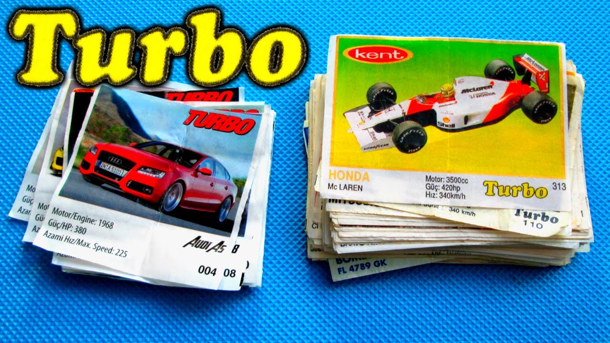
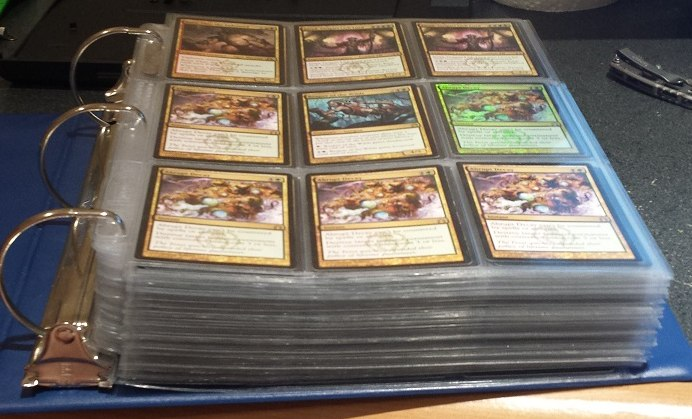
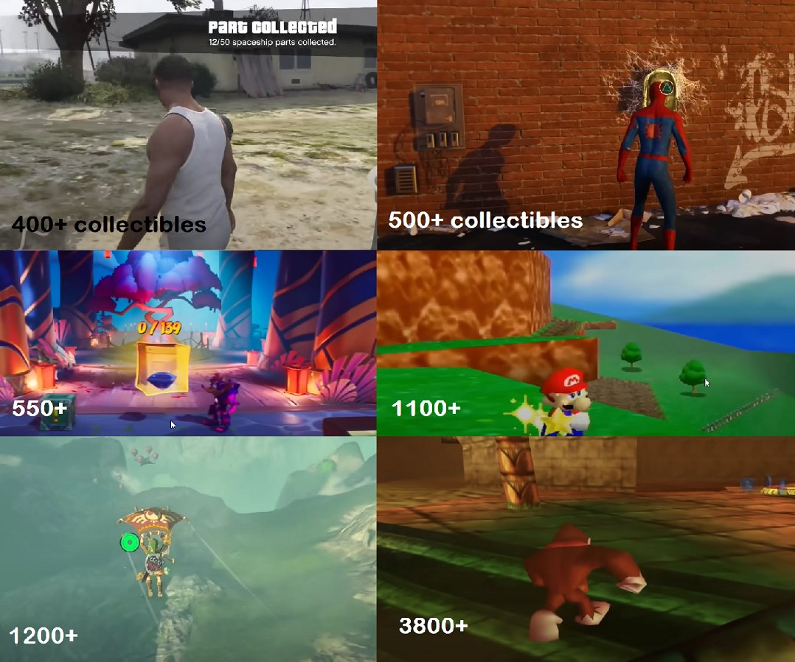
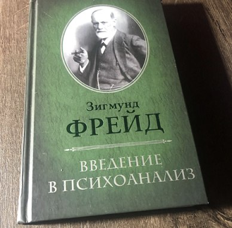
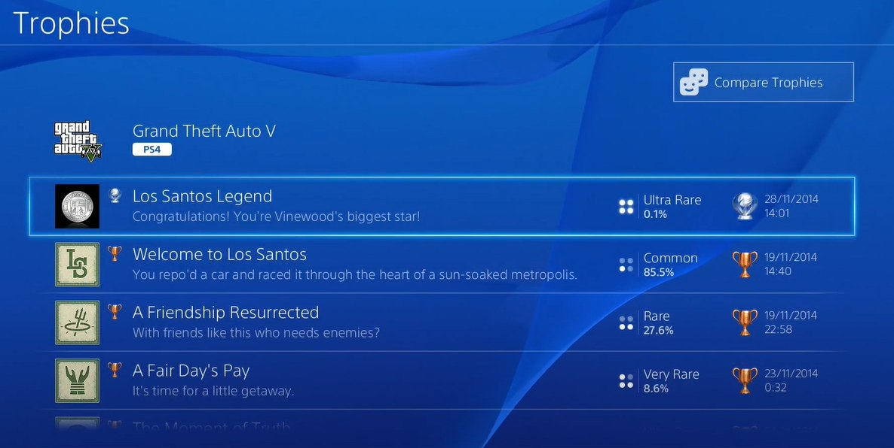
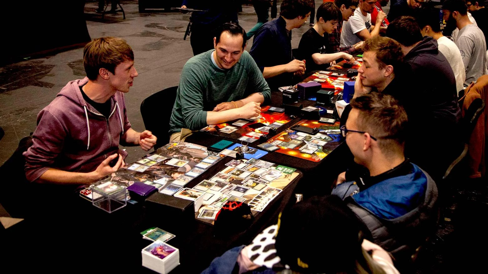
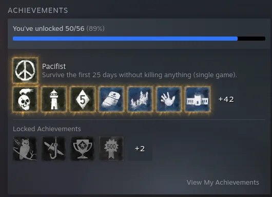
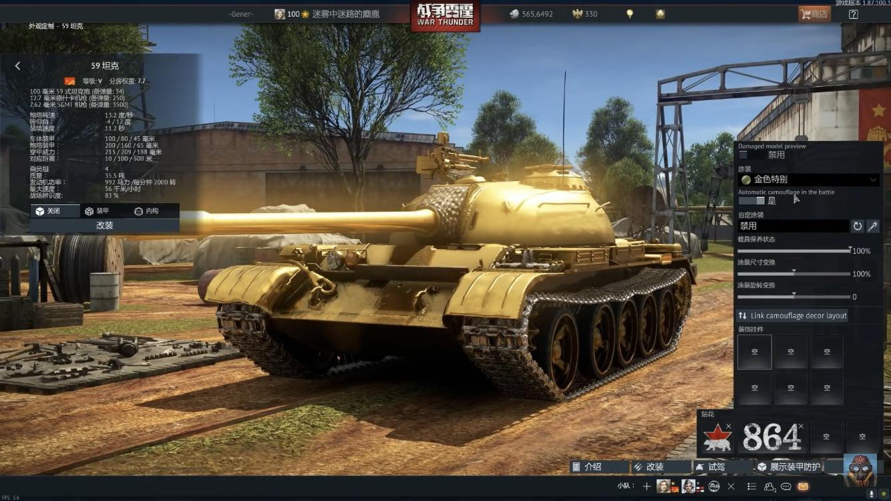
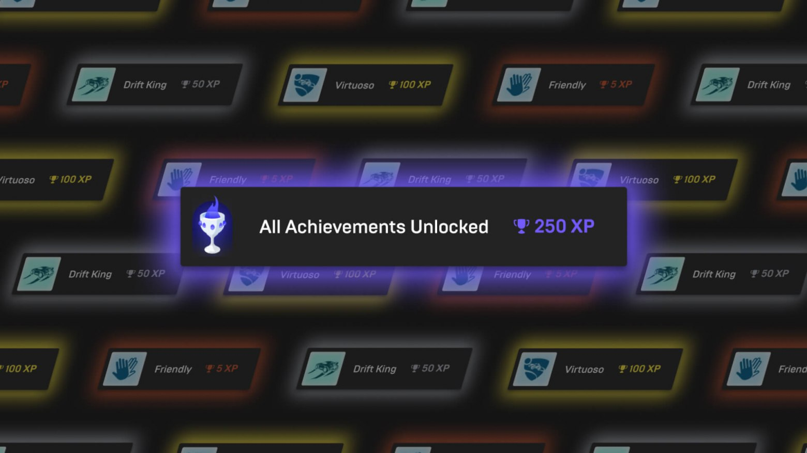
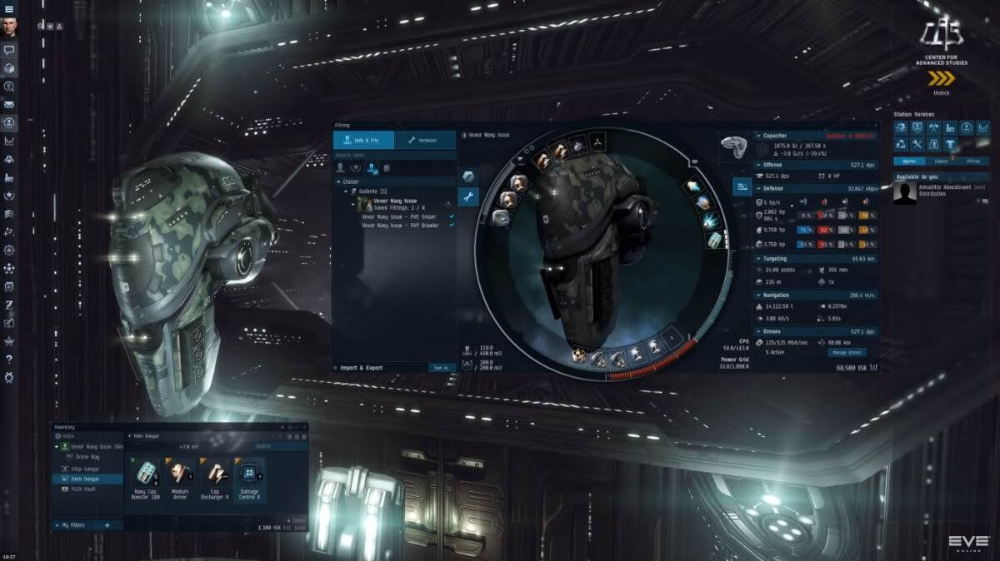

In school I collected Turbo gum wrappers. That set of colorful pictures — bought, won and traded — was of substantial value to me, so much so that it was kept in a tin box under lock. I was two or three short of the full set of, I think, 180. There were two other kids at school with nearly complete sets, and we knew each other's decks exactly; the wrappers the opponents were missing always stayed in the box so as not to be lost in a game of «barrel». Had anyone offered back then to trade them for an equal stack of greenbacks — no way in hell. These days I prefer collecting banknotes…
Back then the meaning of collecting didn't bother me much, and I didn't really think about whether this hobby was, properly speaking, collecting — it was just interesting to assemble the whole set, sort the pictures by year, model, engine power, and look at the car models. Collections are as old as the world, and item-gathering mechanics have been in games ever since games themselves were born. Any collecting is gathering, and gathering is an inseparable trait of humans, going back to the times when they first had the very ability to collect something. And if at first people gathered some utilitarian things, like ritually important objects for ceremonies, then climbing higher up Maslow's pyramid, collecting homogeneous objects grouped by some traits became a kind of leisure. The psychological side of collecting is so strong that psychologists compare it to gambling and passion — that's how deeply this hobby can grab you.
Where the roots are
Games owe the appearance of collectible items to platformers, where collecting coins, rings and bananas lies in the core gameplay and is the basis for story progression and character development. Over time collection mechanics grew more varied and reached many other genres, from RPGs to a whole separate genre (CCGs), and became core mechanics in which you don't even spot the traces of collecting at first.

Collectibles have taken root in games so firmly that players can no longer imagine games without this mechanic, and if players like something, developers will definitely add it, even if it hurts other aspects of the game. But in most cases it's a good way to add optional activities to the game or to let players test their skills — and grab an achievement while at it. Collectibles also nicely increase replayability through the «next move» effect, when each newly obtained item increases the desire to complete the whole collection, which requires playing the level carefully. Especially devoted collectors won't mind playing a level a second time, or even the whole game, to earn the platinum.

The collectible mechanic works especially well when there's a division of characters by class or ability. Some games, for example Fallout 76 or TESO, can abuse the fact that certain achievements can only be earned by characters with certain perks or stat levels. I'm not a WoW expert (correct me in the comments if anything), but an acquaintance told me that some achievements can only be earned on one type of ship with certain modules, and getting it is very, very hard.
But there are crude examples too — when to pass to the next level you have to collect a certain number of collectibles, as done, for example, in the Super Mario or Odyssey series, where you had to collect stars and moons. Players really dislike being forced to do something, especially clearing levels down to the last brick. Nintendo once got badly burned on this mechanic, so usually there are knowingly more of these items than needed to progress.
It's all Freud
People assemble collections to distract themselves from the problems of the surrounding world, because, as grandpa Freud claimed, gathering and sorting through objects is a simple, understandable action that leads to a visible result. Psychology explains collecting as a set of dependencies — you can read about it, for example, here (S. Freud, «A General Introduction to Psychoanalysis») — as the body's defensive reaction to shed surplus energy by converting it into actions, be it drawing, music, or sorting objects, i.e. collecting. I'm a programmer, not a psychologist, but the basics of collection mechanics are given to beginning designers in a cursory way, prescribing a couple more psychology books as a load, like the one named above, and AI programmers also have to dig into all this to speak the same language. Yep, every GD (Game Designer) is a bit of a psychologist, and every AI programmer is a bit of a GD.

This is explained by the fact that people who love games — not necessarily computer ones — have a stronger pull toward collecting. Psychology also claims that collecting comes more easily to people who need a display of strength and a desire to win or dominate.
In the psychology of computer games — turns out there's such a branch of psychology too — four main directions are distinguished:
- domination;
- the need for socialization;
- fear of incompleteness (the unfinished-set effect);
- envy.
Domination
Domination manifests in the desire to possess the objects of a collection: the player «conditionally» owns, sees and knows the items of their collection, and this fact creates a feeling of control and power, even if over «virtual» objects. Domination usually overlaps with the need for socialization, if there's a chance to compare collections and brag about rare or unique items that please the eye — items absent from your deskmate's set. In games this mechanism flourished wildly once players got the chance to put their collections on public display, and the «earned platinum» achievement glows brightly in the profile.

The basic hook of any collection mechanic is a very simple model:
Action → Item → Collection → Reward
The main rule of obtaining a collectible: the time spent grows with the number of items, while the game actions performed should have little effect on the chance of obtaining it. The main property of an item in a collection is its value (rarity), and it is determined, as a rule, by the amount of time needed to obtain it. In almost any collection you can see items ranked by rarity. This isn't always explicitly marked through an item's rank — it can be expressed through the percentage of presence in other collections. You might object that collections should contain items of equal rarity, but in most cases that isn't so (except, perhaps, for set items). This is because assembling a set of high-level items requires a large amount of time that players, in the main mass, can't afford; but if assembling a set starts with a conditionally free low-level thing, then completing such a collection doesn't seem an impossible task to players. You just have to remember that the difficulty of collecting in both cases is the same — in the case of a «cheap» set, most of the time simply goes into the last items of the set.
Socialization
Through collections many find a way to socialize, if replacing ordinary communication with the exchange of collection items suits them. They create communities, groups online and offline, where they exchange accumulated treasures or just bring them to show off. That's actually how friends lured me to have coffee one evening, and a week later I was the proud owner of my first deck.
In games the socialization mechanic also exists, albeit in a more simplified form, when you can exchange, gift, buy or sell items, share collections with your friends. Of course, the main popularizer of socialization in the West — and maybe in Russia too — is the CCG Magic: The Gathering, where at times the socialization element eclipses the core combat mechanic, and people often just gather to swap cards and «walk» their deck. I lasted a year of such «exhibitions» — luckily Saint Petersburg had enough clubs and shops to buy new sets — but D&D with friends and a competent DM won out in the end.

The unfinished-set effect
In the opinion of GD acquaintances, incompleteness is one of the important retention factors in games, especially if a collection's fill progress is over half. Once a certain number of items begins to be associated with a collection, each new item looks more valuable relative to the rest. Thus, with each new item, we strive to make our collection even bigger. But if a collection is finite, then the desire to collect them all eventually comes to the fore! Most often this effect manifests at the «99 out of 100» stage, forcing players to perform actions they wouldn't have performed at the start of the collection. Especially malicious developers, knowing about this effect, often block obtaining the last items behind various «walls»: paywall, timewall, adwall, friendwall and so on.

Paywall, timewall, adwall need no explanation, I think, but friendwall has come to be applied quite often in mobile games, when the system raises the chance of the items missing from your collection appearing at your friends', which lets you create dependency between players if there are collection-exchange mechanisms. But in essence, all this is done so that players constantly bug each other, pulling each other back into the game, raising retention and engagement — and that's both the chance to sell another pack and show an ad, and to brag about the audience size to investors. I absolutely dislike all this; there are always more organic ways to monetize, and manipulating such things unambiguously speaks to a GD's professional (un?)suitability.
Envy
Possessing an item is one of the foundational principles of collections, but when someone else possesses the item, envy kicks in. However much people deny it, envy is the most frequent motivating feeling in games, especially online, especially competitive ones. We can claim all we want that we're not envious, but the neighbor's new BMW, or an assembled platinum in BG3, makes you perform certain actions to obtain the coveted thing. MMOs brought the indulgence of this feeling to perfection, elevating gear items to the rank of collections; such items always stand out on characters and are usually crafted an order of magnitude better than the environment and ordinary things. On this feeling, available to any person, Steam built one of the most profitable economies of virtual items and achievements. And there are also national peculiarities, when bragging rights are worth more than money: they say the achievement for owning this tank isn't given out, but knowing the Chinese attitude toward everything golden, I wouldn't be so sure.

Types of collections by availability
Collections in games are defined by the way they can be obtained or by the functionality of their creation. Basically five creation functionals for working with collecting in games are distinguished — and many more, but all the other acquisition and handling mechanics will be a combination of these five. My colleagues and I argued for a long time about which class to assign unique things to, ones created by users or that can only be bought for «conditional» coins, so for now let them belong to the auction kind.
- Quest — collection items can be obtained after performing certain game actions: fights, quests, achievements, level-ups and the like.
- Drop — an item can be obtained with a certain probability after performing simple game actions, for example grinding or a raid.
- Auction — usually an auxiliary mechanic meant to take control of and centralize the exchange of things between players. They can usually agree among themselves, but then developers lose the ability to influence the economy of collectibles. In rare cases developers put rare things up for auction that can't be obtained any other way; this is condemned by players and badly breaks the game economy.
- Casino/Gacha — a collection item can only be obtained from a «black box», after first tossing in a conditional coin, resource or item. Either way the mechanism comes down to spending real money, however it got into the game. Gacha mechanics usually dynamically manage the drop probability of items, like a casino, so the customer leaves in their underpants but happy.
- Craft — probably one of the most widespread ways of creating collections, when an item is created by a recipe, a set of rules or actions. Craft sets in that same TESO.
Achievements are collections too
Collections of medals/achievements/cards, grouped by the trait of actions performed in a game, became one of the ways to give a chance to brag — or, in the case of platinum, to evoke envy and bewilderment about the 300 hours spent among friends. The achievement mechanic in games is now far more complex than it was originally intended, and it's disheartening that a tendency has begun to seep into Steam where certain achievements can only be earned by passing a paywall. In the case of the Paradox games, new achievements are part of paid DLC, and there's no way to obtain them otherwise. Until around 2020 the Steam developer agreement had a clause that all achievements must be attainable in any of the game's modes; now it isn't there.

Gear is collections too
Over time gear in games became a separate kind of collection, if you can call it that. And live-service games turned gear into functional collections that game designers design with engagement, quests and play-style features in mind. They achieve, through items, changes in the experience gained, and in some games even replaying after updates ship — but that's a whole other story…

← All articles